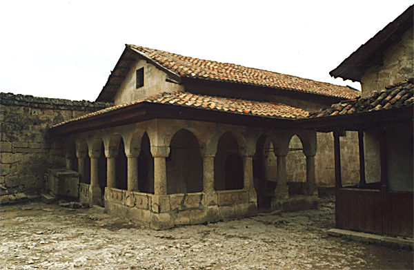
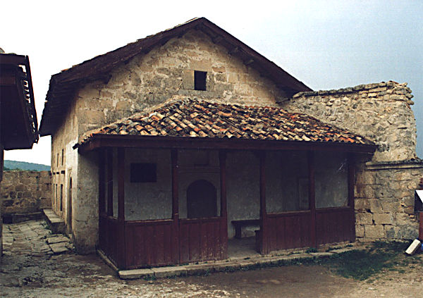
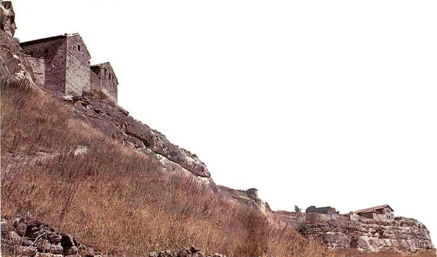

|
Так глубока, древна, неповторима |
| История народа караимов | |
| Древнеассирийская наскальная надпись. |
К
раткая история караимов.
История караимов, одного из древнейших народов земли, насчитывает не одно тысячелетие. Не случайно в одном из произведений Е. Шварца крупный историк высказывает предположение о том, что Адам был караимом. С этим предположением мы, конечно, не можем согласиться. Да и сам Адам фигура легендарная.
История караимов насчитывает по крайней мере 5 тысяч лет (Вопрос о протокараимах, живших 6-7 тысяч лет назад, мы оставляем открытым ввиду отсутствия достаточного количества материала. Надеемся, что будущие караимские историки внесут в этот вопрос полную ясность).

В конце четвертого тысячелетия до нашей эры на Иранском нагорье обитали тюрко-язычные племена. По не совсем ясным до сих пор причинам эти племена начали движение на Запад и достигли среднего Междуречья. Здесь эти племена разделились, и часть из них повернула на Юг, образовав в южном Междуречье Шумерское государство. Другая часть повернула на Север под предводительством Черного Вождя (кара_имам или кара_им), образовав ядро будущего караимского народа.
Раскол произошел на религиозной почве. Как известно, шумеры были язычниками, караимы же хоть и не сформировали еще полностью свое учение, но уже в то время исповедовали монотеизм.
Караимская часть народа достигла северного Междуречья и там осела, на стыке нынешних Турции, Ирака и Сирии в окрестности города Харрана.
Обе части народа, караимская и шумерская сохранили между собой торговые и культурные связи. Многие культурные и научные достижения, приписываемые шумерам, есть основания считать достижениями караимов. Так достижения в области астрономии и изобретение клинописи на самом деле принадлежат караимам.
Некоторые ученые считают, что именно отсюда и произошло название караимов. “Караим” на языках окружающих караимов семитских народов означало - читающие, т.к. караимы были в то время единственным грамотным народом. Нам же более вероятной представляется версия о происхождении названия караимов от имени их легендарного Черного Вождя.

На рубеже второго и третьего тысячелетия Авраам со своим отцом Фаррой покинул шумерский город Ур и переселился сначала в Харран, где прожил некоторое время, похоронил умершего Фарру, после чего покинул Харран и переселился в Ханаан (Палестину). Находясь в Уре, Авраам, как и все жители Ура, был язычником. Прибыв в Ханаан, Авраам уже исповедовал монотеизм. Естественно предположить, что именно в Харране Авраам принял монотеизм, заимствовав его у караимов, живших в окрестностях Харрана.
Иудаизм Авраама очень близок к караимской религии. Это потом пути иудаизма и караимской религии разошлись. Иудаизм все время менялся и после написания талмуда стал другой религией. В то же время это фактически была одна религия.
В 16 веке до нашей эры караимы входят в состав Хеттского царства, а после его гибели попадают под влияние Ассирии.
Этот период караимской истории наименее изучен.
После гибели Ассирии караимы поочередно входят в состав Персии, государства Александра Македонского и Парфянского царства.

В 2-1 веках до нашей эры часть караимов расселяется по всему Ближнему Востоку, и их влияние обнаруживается в различных странах этого региона. До этого времени влияние караимов в странах Ближнего Востока носило эпизодический характер. Например попытка установления монотеизма в Египте фараоном Эхнатоном была предпринята под явным влиянием караимского учения. Дело в том, что первым министром Эхнатона был караим Абдулла Пуки (возможно Фуки).
Всюду, и во все времена, караимы предпочитали жить в пещерах. Достаточно вспомнить пещерные города Мангуп-Кале и Джуфт-Кале (Последний иногда ошибочно называют Чуфут-Кале). Видимо Кумранская община ранних христиан, жившая в пещерах, находилась под сильным караимским влиянием. Многие исследователи поддерживают гипотезу караимского происхождения девы Марии. При этом в качестве аргумента выдвигается то, что дева Мария предпочла родить Иисуса именно в пещере.
Нам такая аргументация кажется мало убедительной.
В начале нашей эры начинается движение караимов на север, через Кавказский хребет на территорию нынешнего Дагестана. Этот процесс особенно усилился в седьмом веке под давлением нашествия арабов - мусульман. Объединясь с местными тюркскими племенами, караимы создают Хазарский каганат, в котором постепенно занимают командные посты. Именно в этот период караимизм становится господствующей религией каганата. Караимы расселяются по всей территории каганата, в том числе часть караимов переселяется в Крым.
Но даже после ухода караимов из Персии и Междуречья их духовное влияние в этом регионе было настолько сильным, что часть проживающих там евреев во главе с Анан бен Давидом в конце 8-го века перешла в караимскую веру. Правда, после смерти Анана большинство евреев вновь вернулись в иудаизм. (До сих пор в Египте, Израиле и некоторых других странах есть небольшие общины последователей Анана бен Давида, называющие себя караимами)
Гибель Хазарского каганата и последующее нашествие татар явилось величайшей трагедией караимского народа. Большая часть караимов погибла, а выжившие крымские караимы попали под власть крымских татар.
Однако в культурном плане все было как раз наоборот. Крымские татары переняли у более культурных караимов не только караимскую культуру, но и караимский язык. Именно поэтому язык крымских татар так сильно отличается от языка остальных татар.
История караимов в последние века достаточно хорошо изучена и не требует особых пояснений.
Хочется верить, что те пробелы караимской истории, которые мы не смогли разрешить в данной работе будут заполнены исследованиями будущих пытливых караимских историков.